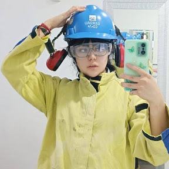
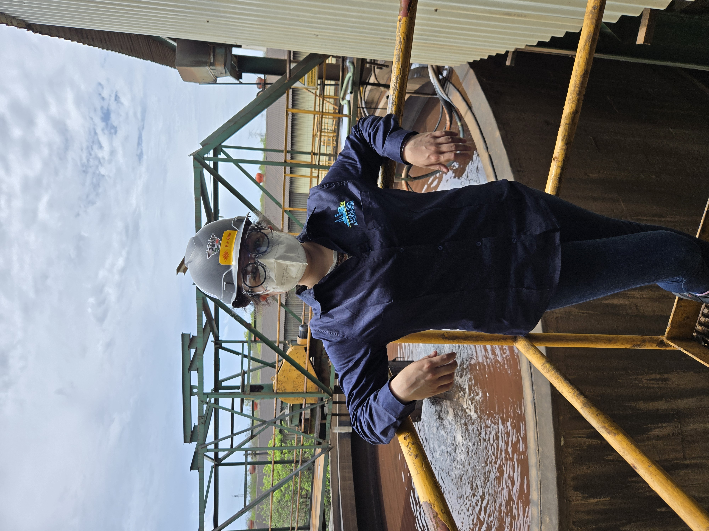
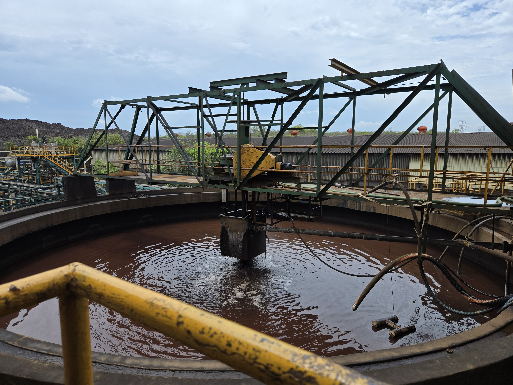

Ingeniería Químico-Metalúrgica
Grupo México
Charcas y Santa Bárbara
NOM-010
Signatario acreditado
UNAM
Ingeniería Química Metalúrgica
Aranza Yacarandy Rodriguez Muñiz
Ingeniera Químico-Metalúrgica con experiencia en procesamiento de minerales, análisis de datos en operaciones mineras, interpretación de resultados metalúrgicos, control de variables de proceso y evaluación de recuperaciones en lixiviación y flotación.
Procesamiento de minerales
Lixiviación y flotación
Análisis técnico-operativo

Perfil técnico con enfoque en optimización de procesos y análisis operativo en planta.
Perfil profesional
Un perfil técnico, analítico y visualmente claro
Participación en proyectos dentro de Grupo México, con enfoque en planta concentradora, condiciones operativas, recuperación metalúrgica y evaluación técnica del desempeño del proceso.
Enfoque principal
Optimización de procesos en planta concentradora mediante análisis técnico y operativo, interpretación de resultados metalúrgicos y control de variables críticas de operación.
Fortalezas
- Interpretación de resultados metalúrgicos
- Control de variables de proceso
- Evaluación de recuperaciones
- Análisis técnico en operaciones mineras

Experiencia profesional
Trayectoria en análisis, investigación y operación minera
Químico Analista de Muestreo
Análisis Ambiental · Grupo México, Newmont
Signatario Acreditado de la Entidad Mexicana de Acreditación en NOM-010.
- Monitoreo de condiciones operativas en áreas industriales bajo cumplimiento de la NOM-010-STPS.
- Evaluación de exposición a agentes químicos y su impacto en seguridad y continuidad operativa.
- Análisis de variables ambientales como polvos, vapores y reactivos vinculados a procesos metalúrgicos.
- Interpretación de resultados analíticos para validación de condiciones seguras de operación.
- Participación en muestreo en campo dentro de unidades mineras.
- Evaluación de cumplimiento normativo sin afectar parámetros críticos de proceso como pH, concentración de reactivos y condiciones de operación.
- Apoyo en generación de reportes técnicos con integración de datos de campo y laboratorio.
- Coordinación con equipos técnicos para asegurar condiciones de operación alineadas con estándares de seguridad y eficiencia.
Técnica en Investigación
Lixiviación de concentrados de litio obtenidos de pegmatitas · Instituto de Geofísica
- Diseño y evaluación de una ruta metalúrgica integral con trituración, molienda, flotación selectiva y lixiviación ácida.
- Determinación de variables críticas como tamaño de partícula, concentración de ácido, temperatura, relación sólido-líquido y tiempo de residencia.
- Análisis de cinéticas de disolución y comportamiento metalúrgico para identificar condiciones óptimas de recuperación.
- Evaluación de balances metalúrgicos y rendimiento del proceso para determinar viabilidad técnica.
- Elaboración de reportes técnicos con propuestas de optimización y escalamiento del proceso.
- Interpretación de resultados experimentales mediante análisis estadístico.
- Monitoreo y análisis de parámetros operativos en planta concentradora como recuperación, ley, porcentaje de sólidos y pH.
- Interpretación de resultados metalúrgicos para evaluación de eficiencia del proceso.
Técnica en Investigación
Lixiviación en columna de minerales oxidados de cobre · Instituto de Geología
- Evaluación de cinéticas de disolución y recuperación de Cu²⁺ en columnas piloto de lixiviación.
- Simulación de condiciones operativas de procesos hidrometalúrgicos.
- Desarrollo de un modelo matemático del proceso mediante Runge–Kutta de cuarto orden en Python.
- Análisis y optimización de variables de operación como consumo de ácido, tamaño de partícula y tiempo de ciclo.
- Mejora de la eficiencia de recuperación metalúrgica a partir del análisis técnico del proceso.
Entorno profesional
Contexto visual del trabajo en planta y mina


Áreas de interés
Procesos metalúrgicos, control operativo y recuperación
Una presentación visual del perfil profesional con estética limpia, técnica y contemporánea.
Educación
Formación académica
Universidad Nacional Autónoma de México
Ingeniería Química Metalúrgica
Honores: Becaria STEM del programa BécalasBelead de mujeres de alto rendimiento.
Instituto Politécnico Nacional
Técnico en Construcción y Topografía
Honores: 4° lugar en Interpolitécnico de Química interprepas IPN.
Skills
Competencias técnicas
Procesamiento de minerales
- Flotación de sulfuros (Cu–Mo) y control de selectividad
- Conminución (trituración y molienda) y control de P80
- Espesamiento y manejo de pulpas (% sólidos, sedimentación)
- Lixiviación de minerales (óxidos de cobre y otros sistemas)
- Balance metalúrgico (masa y metal)
- Interpretación de recuperación (%) y ley de concentrado
Control de proceso y operación
- Monitoreo de variables críticas: pH, % sólidos, tamaño de partícula y dosificación de reactivos
- Evaluación de desempeño de planta concentradora (recuperación vs ley)
- Identificación de desviaciones operativas y análisis de causa raíz
- Seguimiento de parámetros de operación en flotación y molienda
- Optimización de condiciones operativas para mejora de recuperación
Perfil analítico
Experiencia combinando trabajo de campo, interpretación de resultados, análisis estadístico y evaluación técnica de variables de operación.
Comunicación técnica multicultural
Español
Nativo
Inglés
Fluido
Alemán
Lectura y escritura
Chino
Básico
Logro destacado
3.er lugar – WOMENCISO 2025 (ITAM), proyecto PIAP-17 enfocado en innovación tecnológica y resolución de problemas.
Contacto
Información profesional
Ciudad de México, México
aranzaymuniz@gmail.com +52 55 5419 1476 linkedin.com/in/aranza-y-rodriguezDisponible para
Procesamiento de minerales, análisis técnico, operación metalúrgica, evaluación de procesos y trabajo en planta.